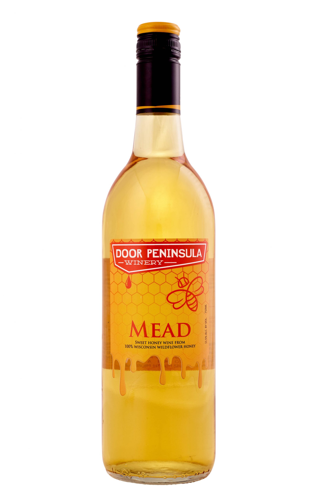

Mead

Description
Mead is a alcoholical beverage, made of honey that was invented by the mighty vikings.
Ingredients
- 3 lbs Honey
- 3 quarts water
- 1 packet mead yeast
- Optional Fruit of Herbal Flavoring
Instructions
- sanitize all equipment
- Mix honey, water and yeast nutrient
- place the mixture in a fermentation vessel
- cap with water lock and rubber stopper
- allow it to ferment for 2-3 weeks
- use a siphon to rack the med into a new fermentation vessel
- let it ferment for longer than 6 weeks
- Bottle the mead
- Soak the corks in hot water until pliable, then cork the bottles
- Bottle age for at least a month up to 10 years